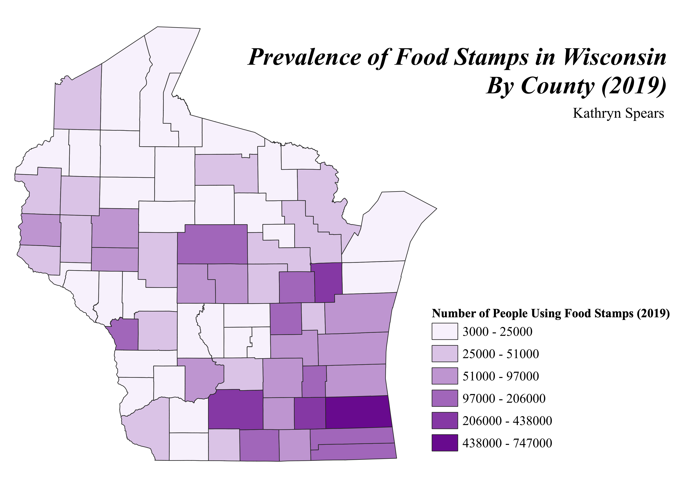

Homework 7: Census data choropleth
Kathryn Spears
My map looks at how many people used food stamps in the state of Wisconsin in 2019. The darker colors indicate a larger number of people in the county that use food stamps. This choropleth does not take county population into account (as the county data I downloaded from census.gov did not include by county population figures), so the data is displayed by the total number of people using food stamps rather than a percentage or ratio. Based on my (albeit limited) knowledge of Wisconsin urban-rural locations, the majority of the state's population is concentrated in the southern part of the state, which is indicated by the higher concentration of darker colors in that region. This suggests that there are more people in the southern part of the state using food stamps, but without population metrics we cannot conclude anything regarding the socio-economic status in those regions as a higher population would naturally yield a higher number of people using food stamps. In the future I would try to find a dataset that includes population metrics as that would be a better display and also make the values in my legend smaller (smaller numbers are often more visually appealling). My data was sourced from census.data.gov and was collected by the American Community Survey.

Projection: NAD83(NSRS2007) / Wisconsin Transverse Mercator (EPSG: 3701)
Data used for this project
CSV dataset from US Census
Vector geoJSON